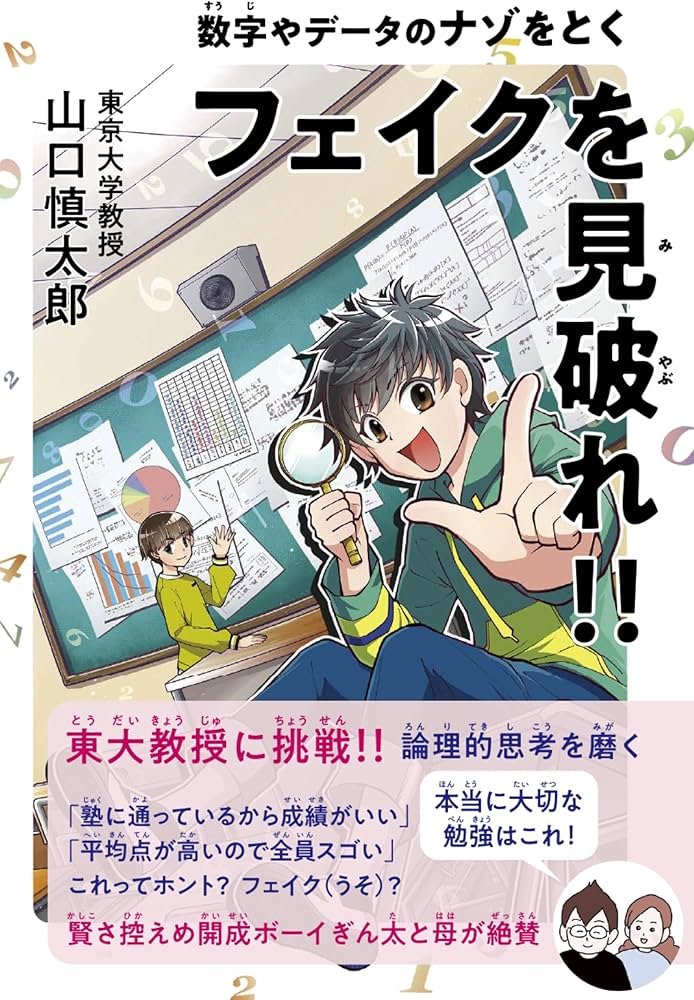
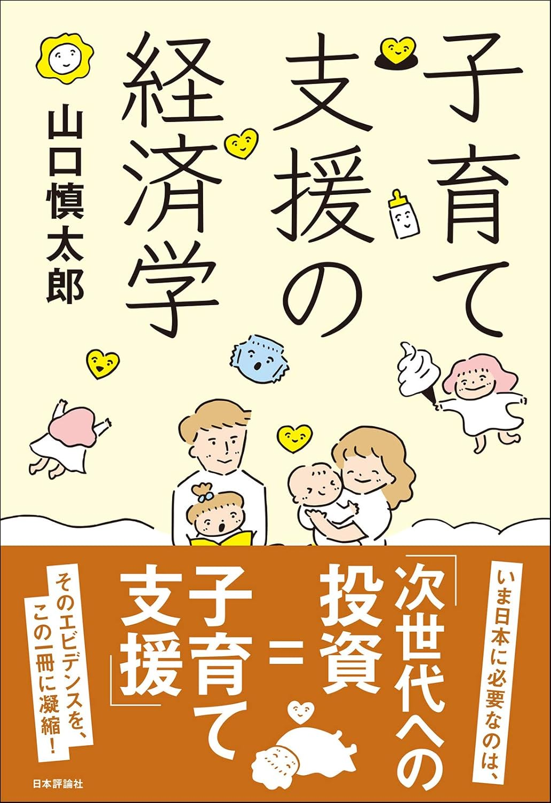
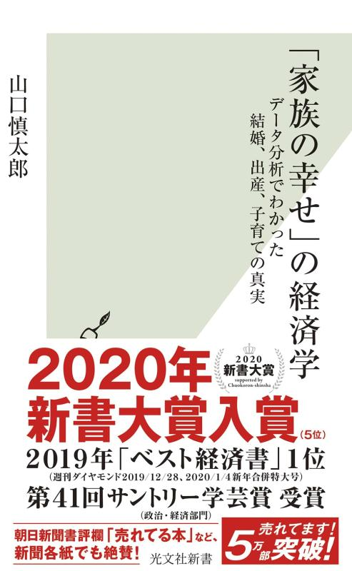

著書
単著
-

グラフのトリック、思い込み、合わないつじつまなど、世の中にあふれる「フェイク（うそ）」をクイズ形式で解き明かす一冊。数字やデータのフェイクを見抜く力を養い、論理的思考を高める。中学受験からその先の人生まで役立つ内容。
-

第64回 日経・経済図書文化賞（2021年）少子化対策の要である現金給付・保育所拡充・育児休業など各政策の効果を、厳密なエビデンスに基づいて評価・解説。どのような政策がどれほど有効かを明快に論じた一冊。
-

第41回 サントリー学芸賞（2019年）結婚・母乳・保育園・育休など、家族形成にまつわる大きな意思決定にエビデンスでどこまで答えられるかを最新研究に基づいて解説。著者自身が一人の親として書いた点も大きな魅力。
その他
-
『人生は生い立ちが8割 見えない貧困は連鎖する』（ヒオカ著）
-
『経済学を味わう』（第4章「データ分析で社会を変える」）